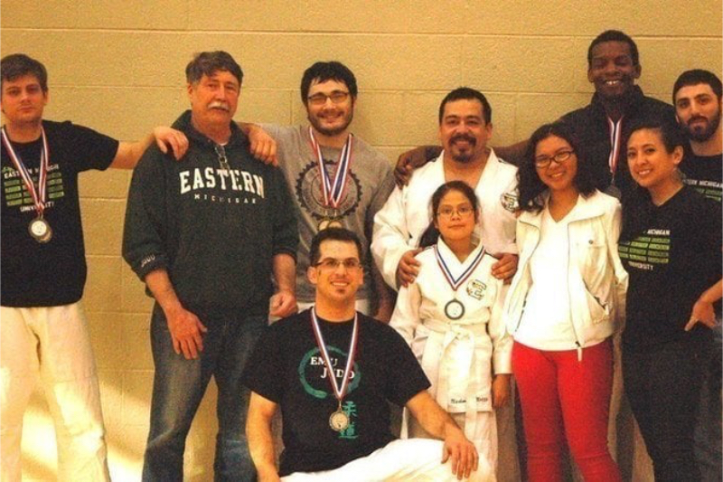

EMU Judo
Stay up-to-date with the latest club news and events.
Our Mission
Founded in 1995, EMU Judo promotes judo at Eastern Michigan University. Our goal is to provide a welcoming environment for all skill levels, from beginners to advanced judokas. Our team consists of nationally ranked athletes and passionate coaches dedicated to displaying the spirit of judo.
We offer regular training sessions, participate in competitions, and host events to grow the judo community on campus.
Meet Our Team
Sensei Frank Gerlitz
7th Dan Judo and 8th Dan in BJJ, Sensei Frank leads our team with passion and expertise.
Sensei Christian Gerlitz
5th Dan, Sensei Christian leads our team with passion and expertise as a former nationally ranked athlete in various sports such as Judo, Sambo, and Wrestling.
Bella Adair
Club President — Bella coordinates club activities and supports members throughout the year and is also a competititor herself with 2 State Championships under her belt.
Chris Hutchcraft
2nd Dan, Hutchcraft is a current nationally ranked athlete on the US Judo roster.
Where We Started
This photo shows our team from over 10 years ago, capturing the roots and beginnings of EMU Judo.